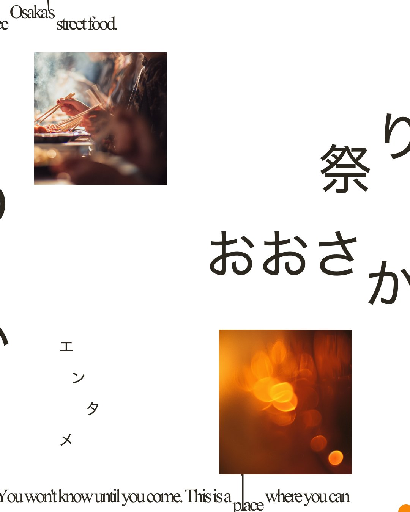

01 — 感覚 / Abstract
01 — 感覚 / Abstract

02 — 体験 / Real 03 — 疑似 / Pseudo
01 — 感覚 / Abstract
03 — 疑似 / Pseudo
01 — 感覚 / Abstract

02 — 体験 / Real
03 — 疑似 / Pseudo
— Concept / 全体コンセプト
本ポスターでは、屋台というリアルな体験を題材にしながら、その"ズレ"を視覚的に表現している。 左から右へ展開する3枚の流れは、電車の壁面に飾られることを想定した横断的な体験設計だ。 見る人は左から右へ目を動かすことで、 「抽象（感覚）→ 具体（体験）→ 疑似（画面越し）」という認識の変化を無意識に辿る。
— 01 / Left
Essence of Experience
油・光・粒子などを抽象化したビジュアル。具体的な屋台の形は見せない。 「熱」「音」「匂い」といった体験の感覚のみを表現している。
— UX的役割
ユーザーの記憶や感覚に直接アクセスする導入。体験の"本質"は言語化できない感覚であることを提示する。
— 02 / Center
The Real Experience
実際の屋台の写真。人・手・煙などリアリティのある情報を提示する。 大きな文字「おおさか / 祭り」が空間を支配し、場の空気感を伝える。
— UX的役割
抽象（左）と疑似（右）をつなぐ"理解の基準点"。「これが体験だ」という認識を確立させる。
— 03 / Right
Pseudo Experience
スマホで見る行為、映像や画面越しの光。「できているつもりか？」という問い。 寒色系の光が体験の温度の低下を視覚化する。
— UX的役割
ユーザーに問いを投げ、自分ごと化させる。現代人の"疑似体験"を可視化し、再訪への動機を作る。
— UX Flow / 体験設計の構造
Step 01 — 左パネル
感覚に触れる
Unconscious Trigger
「なんだこれ？」という直感的な興味。言語化できない感覚が、記憶の奥にある体験の残像を呼び起こす。
Step 02 — 中パネル
理解する
Recognition
「屋台か」と認識する。具体的な情報が抽象を解読し、体験のイメージが一気に立ち上がる。
Step 03 — 右パネル
疑問が生まれる
Self-Question
「自分は体験できているのか？」自分ごと化された問いが、実際に足を運ぶ動機へと変換される。
— Visual Design / 視覚的な設計ポイント
— Temperature Map / 温度差の設計
"体験の温度差"を、色の温度差として視覚化した。左から右に向かうほど熱が失われていく。
抽象と具体のコントラスト
3枚それぞれが異なる「体験の質感」を持つ。抽象から具体へ、そして疑似へ。視覚言語の変化が認識の変化を導く。
侵食表現（オレンジの光）
体験は完全には消えず、無意識に残り続けることを表現。明確には見えないレベルで、記憶の残像として存在し続ける。
余白設計
説明ではなく"気づき"を生む設計。見る人が自分の文脈で解釈できる空白を意図的に作っている。
文字の役割
「体験せよ」は命令ではなく再認識。「できているつもりか？」は問答ではなく自問を促す装置として機能する。
— Copy / コピーの設計意図
体験せよ
命令形に見えるが、実際には"再認識"の促し。
「あなたはもう体験しているか？」という問いが内包されている。
動詞として語りかけることで、受動的な鑑賞を能動的な思考へ転換する。
できているつもりか？
自分への問い。SNSや動画で「見た」ことを「体験した」と誤認する現代への問いかけ。
見る人が自問することで、実際に足を運ぶ動機が生まれる。
問いかけの形を取ることで、押しつけがましくなく刺さる。
— Summary
— 01
屋台の魅力を単に伝えるのではなく、"体験の価値"を再認識させる設計。広告ではなく、体験設計の実装物として機能する。
— 02
「体験したつもり」という現代的な課題に対して、視覚的に問いを投げかける。ポスターを見た人が自分自身の体験を問い直す契機になる。
— 03
疑問が生まれ、自分ごとになり、行動へ。UX設計と同じ「無意識→理解→行動」の導線を、ポスターという媒体で実装している。